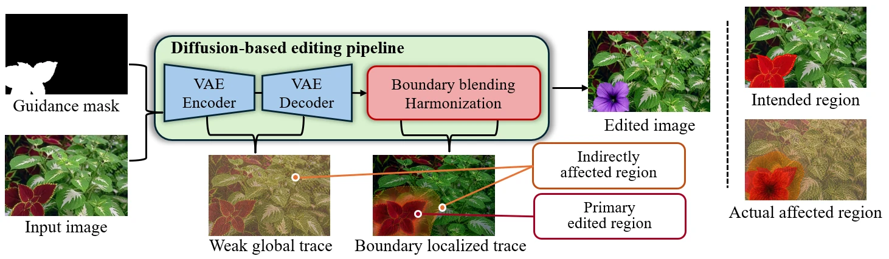
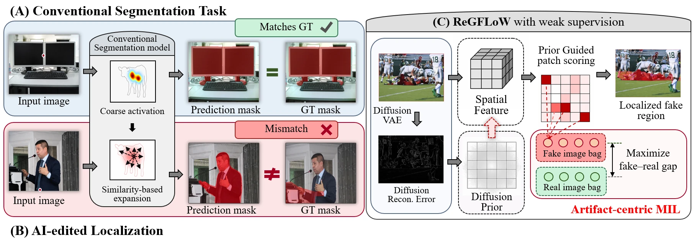
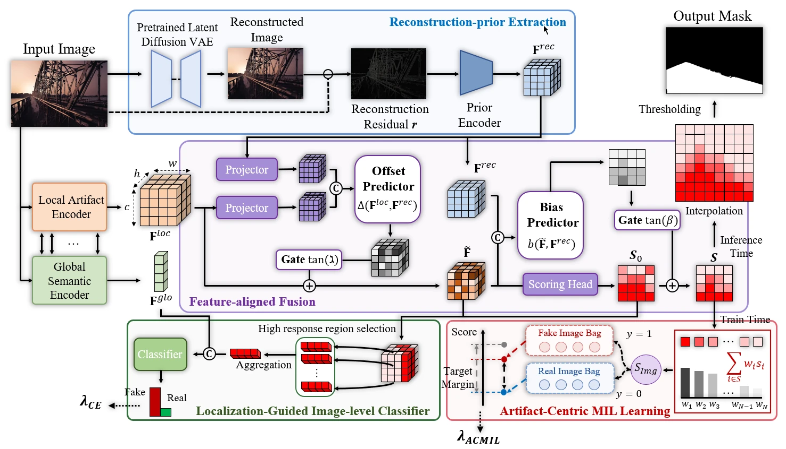
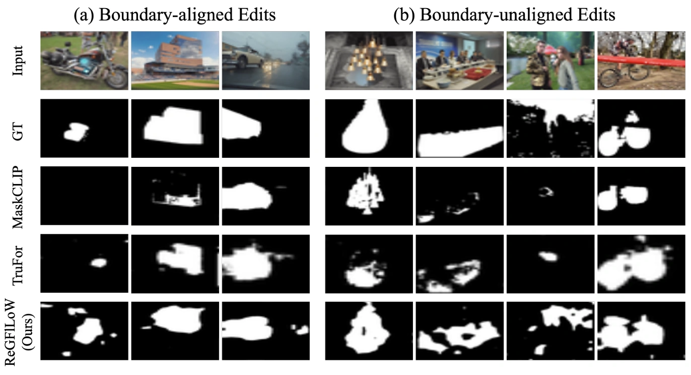
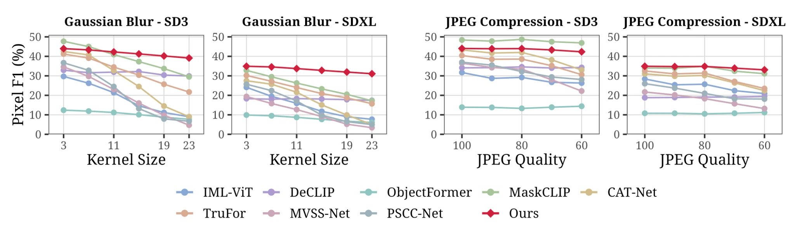

The conventional choice
Annotate in detail.
Dense labels provide explicit spatial targets, but annotation becomes costly as data scales.
The conventional choice
Dense labels provide explicit spatial targets, but annotation becomes costly as data scales.
The practical alternative
Weak supervision learns localization from coarse labels, reducing the need for dense annotation.
The new question
MLLMs and VLMs make dense labels easier to obtain. But are more detailed labels always better?
The central question
A. Not necessarily. More detailed labels can still teach the wrong thing.
In diffusion-based image editing, artifacts can extend beyond the intended edit area. Pixel masks can then label transferable traces as authentic, providing misleading supervision and hurting generalization.
Weak supervision offers a natural way to ease this mismatch. Image-level real/fake labels do not force every out-of-mask region to be treated as authentic. Our method, ReGFLoW, builds on this principle with reconstruction-guided, artifact-centric learning.

Sometimes, less supervision can lead to better generalization.

Reconstruction-Guided Fake Localization under Weak supervision: use diffusion reconstruction cues to learn localization from image-level real/fake labels.

A frozen diffusion VAE provides reconstruction error as spatial guidance.
Gated fusion and a logit bias inject the prior into both feature and score spaces.
Aggregate suspicious patches and rank fake-image evidence above real-image evidence.
Train on SD1.5; evaluate on unseen generators and datasets without target-domain adaptation.
P: partially edited images. P+F: partially edited and fully synthetic images. OOD Avg.: average over the four unseen generators.
ReGFLoW achieves competitive out-of-domain localization with only image-level supervision: 38.6 OOD average F1, surpassing most evaluated fully supervised baselines, and the best Flux.1 F1 (29.2).
The weakly supervised baselines are adapted from other settings: WSCL and BoxPromptIML from conventional image manipulation, and DOLOS from face-centric diffusion deepfakes—not prior solutions to diffusion-edited localization in generic visual content.
| Method | In-domain | Cross-domain | Average | ||||
|---|---|---|---|---|---|---|---|
| SD1.5 | SD2.1 | SDXL | SD3 | Flux.1 | Avg. | OOD Avg. | |
| Fully supervised methods | |||||||
| PSCC-Net[52] | 64.2 | 44.8 | 26.1 | 37.3 | 11.6 | 36.8 | 29.9 |
| TruFor[19] | 71.0 | 61.9 | 31.9 | 38.5 | 9.7 | 42.6 | 35.5 |
| IML-ViT[18] | 73.6 | 50.6 | 26.0 | 28.3 | 7.9 | 37.3 | 28.2 |
| MaskCLIP[9] | 75.8 | 63.2 | 35.2 | 49.8 | 18.4 | 48.5 | 41.7 |
| Weakly supervised methods | |||||||
| WSCL[21] | 25.6 | 25.9 | 26.0 | 25.4 | 25.3 | 25.6 | 25.7 |
| DOLOS[22] | 21.5 | 19.1 | 19.8 | 20.3 | 19.2 | 20.0 | 19.6 |
| BoxPromptIML[44] | 11.5 | 10.9 | 10.9 | 13.8 | 10.3 | 11.5 | 11.5 |
| ReGFLoW(Ours) | 49.3 | 46.3 | 34.9 | 43.9 | 29.2 | 40.7 | 38.6 |
| Method | In-domain | Cross-domain | Average | |||||||||||
|---|---|---|---|---|---|---|---|---|---|---|---|---|---|---|
| SD1.5 | SD2.1 | SDXL | SD3 | Flux.1 | Avg. | OOD Avg. | ||||||||
| F1 | IoU | F1 | IoU | F1 | IoU | F1 | IoU | F1 | IoU | F1 | IoU | F1 | IoU | |
| Fully supervised methods | ||||||||||||||
| PSCC-Net[52] | 64.2 | 54.7 | 44.8 | 36.7 | 26.1 | 19.7 | 37.3 | 29.3 | 11.6 | 8.2 | 36.8 | 29.7 | 29.9 | 23.5 |
| TruFor[19] | 71.0 | 63.4 | 61.9 | 54.7 | 31.9 | 26.5 | 38.5 | 32.2 | 9.7 | 7.6 | 42.6 | 36.9 | 35.5 | 30.3 |
| IML-ViT[18] | 73.6 | 66.5 | 50.6 | 44.8 | 26.0 | 21.5 | 28.3 | 23.6 | 7.9 | 6.1 | 37.3 | 32.5 | 28.2 | 24.0 |
| MaskCLIP[9] | 75.8 | 68.6 | 63.2 | 56.1 | 35.2 | 29.5 | 49.8 | 42.7 | 18.4 | 14.8 | 48.5 | 42.4 | 41.7 | 35.8 |
| Weakly supervised methods | ||||||||||||||
| WSCL[21] | 25.6 | 16.7 | 25.9 | 17.0 | 26.0 | 17.0 | 25.4 | 16.5 | 25.3 | 16.4 | 25.6 | 16.7 | 25.7 | 16.7 |
| DOLOS[22] | 21.5 | 13.4 | 19.1 | 11.9 | 19.8 | 12.2 | 20.3 | 12.5 | 19.2 | 12.0 | 20.0 | 12.4 | 19.6 | 12.2 |
| BoxPromptIML[44] | 11.5 | 7.0 | 10.9 | 6.5 | 10.9 | 6.6 | 13.8 | 8.4 | 10.3 | 6.2 | 11.5 | 6.9 | 11.5 | 6.9 |
| ReGFLoW(Ours) | 49.3 | 36.9 | 46.3 | 33.8 | 34.9 | 23.6 | 43.9 | 30.9 | 29.2 | 19.0 | 40.7 | 28.8 | 38.6 | 26.8 |
Partially edited and fully synthetic images coexist in practice. In this more realistic P+F setting, ReGFLoW achieves the best OOD average F1 (31.3) among the evaluated methods, without pixel-level supervision or target-domain adaptation.
| Method | In-domain | Cross-domain | Average | ||||
|---|---|---|---|---|---|---|---|
| SD1.5 | SD2.1 | SDXL | SD3 | Flux.1 | Avg. | OOD Avg. | |
| Fully supervised methods | |||||||
| TruFor[19] | 28.8 | 20.1 | 15.9 | 16.4 | 8.4 | 17.9 | 15.2 |
| IML-ViT[18] | 30.2 | 24.7 | 17.6 | 13.5 | 7.7 | 18.7 | 15.9 |
| MaskCLIP[9] | 95.1 | 73.2 | 20.8 | 17.7 | 4.8 | 42.3 | 29.1 |
| Weakly supervised methods | |||||||
| ReGFLoW(Ours) | 35.6 | 33.4 | 30.1 | 32.2 | 29.4 | 32.2 | 31.3 |
ReGFLoW outperforms every evaluated fully supervised baseline across all three settings.


Expand an experiment, or follow its link to the paper.
Artifact-focused localization evidence also supports image-level detection. ReGFLoW achieves 76.22 OOD average F1.
| Method | In-domain | Cross-domain | Average | |||||||||||
|---|---|---|---|---|---|---|---|---|---|---|---|---|---|---|
| SD1.5 | SD2.1 | SDXL | SD3 | Flux.1 | Avg. | OOD Avg. | ||||||||
| F1 | ACC | F1 | ACC | F1 | ACC | F1 | ACC | F1 | ACC | F1 | ACC | F1 | ACC | |
| CNNDet[54] | 84.60 | 85.04 | 71.56 | 75.94 | 59.70 | 68.72 | 56.27 | 67.08 | 35.72 | 57.57 | 61.57 | 70.87 | 55.81 | 67.33 |
| GramNet[55] | 80.51 | 80.35 | 74.01 | 76.66 | 65.28 | 70.76 | 64.35 | 70.29 | 52.00 | 63.37 | 67.23 | 72.29 | 63.91 | 70.27 |
| FreqNet[56] | 75.88 | 77.70 | 60.97 | 68.37 | 53.15 | 64.02 | 53.50 | 64.37 | 38.47 | 57.08 | 56.39 | 66.31 | 51.52 | 63.46 |
| NPR[57] | 79.41 | 79.28 | 81.67 | 81.84 | 72.12 | 74.28 | 73.43 | 75.47 | 67.62 | 71.36 | 74.85 | 76.45 | 73.71 | 75.74 |
| TruFor[19] | 90.12 | 97.73 | 35.93 | 55.62 | 58.04 | 66.41 | 59.73 | 67.51 | 49.12 | 61.62 | 58.59 | 69.78 | 50.70 | 62.79 |
| IML-ViT[18] | 94.47 | 75.73 | 69.70 | 61.19 | 40.98 | 49.95 | 44.69 | 51.25 | 18.20 | 43.62 | 53.61 | 56.35 | 43.39 | 51.50 |
| MaskCLIP[9] | 91.28 | 91.47 | 83.36 | 85.28 | 72.90 | 77.98 | 67.79 | 74.95 | 53.08 | 67.12 | 73.68 | 79.36 | 69.28 | 76.33 |
| ReGFLoW(Ours) | 93.02 | 93.08 | 91.34 | 91.73 | 79.89 | 82.63 | 76.87 | 80.62 | 56.78 | 68.76 | 79.58 | 83.36 | 76.22 | 80.93 |
Both reconstruction-guided scoring and artifact-centric MIL contribute to localization.
| Method | Bias Predictor | Feature-aligned Fusion | Artifact-Centric MIL | Pixel F1 |
|---|---|---|---|---|
| ReGFLoW(Ours) | ✓ | ✓ | ✓ | 49.38 |
| w/o Bias Predictor | × | ✓ | ✓ | 46.06 |
| w/o Reconstruction Prior | × | × | ✓ | 38.08 |
| Score-Pooling BCE | × | × | × | 32.34 |
Adding a source domain improves average F1 on remaining unseen domains at a fixed total training size. Parentheses show changes from the SD1.5-only setting; “–” excludes a training domain.
| Train | SD2 | SD3 | SDXL | FLUX | Avg. Δ |
|---|---|---|---|---|---|
| SD1.5 | 40.96 | 38.09 | 29.36 | 24.12 | – |
| + SD2 | – | 42.34(+4.25) | 33.73(+4.37) | 28.71(+4.60) | +4.40 |
| + SD3 | 42.75(+1.79) | – | 34.48(+5.12) | 30.96(+6.84) | +4.58 |
| + SDXL | 40.88(-0.08) | 41.84(+3.75) | – | 31.00(+6.88) | +3.52 |
| + FLUX | 41.57(+0.61) | 43.82(+5.73) | 34.47(+5.11) | – | +3.82 |
Takeaway
The right choice depends on the task, the data, and what the labels represent. Diffusion-edited localization shows that weak supervision can be more than a cheaper alternative: it can be a better route to generalization.
Mask availability, training and inference details, additional qualitative results, limitations, and related work.
@misc{lee2026less,
title = {Less Supervision, Better Generalization: Weakly Supervised Fake Region Localization in Diffusion-Edited Images},
author = {Junhee Lee and Donghyeon Jeon and Taeoh Kim and Beomyoung Kim and MyeongAh Cho},
year = {2026},
note = {Manuscript}
}